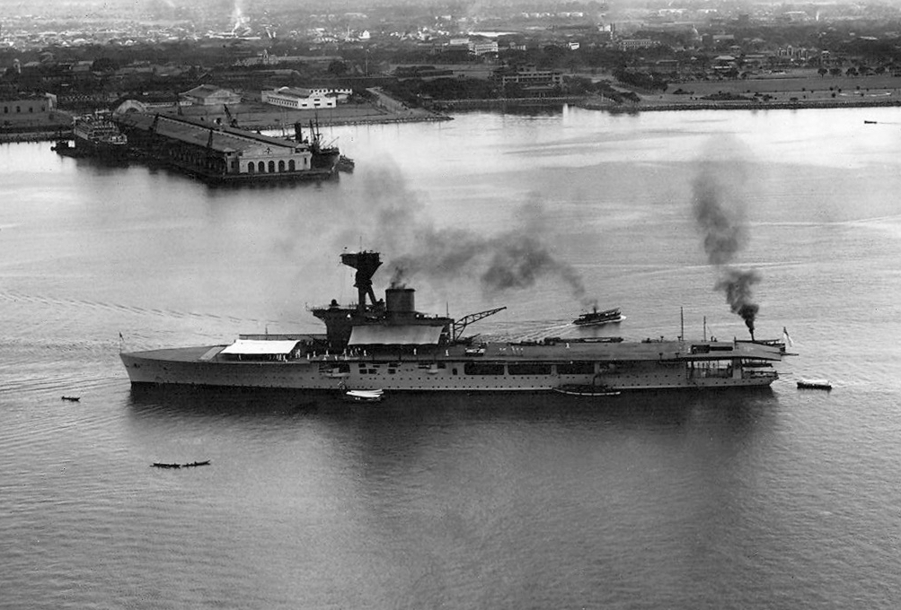
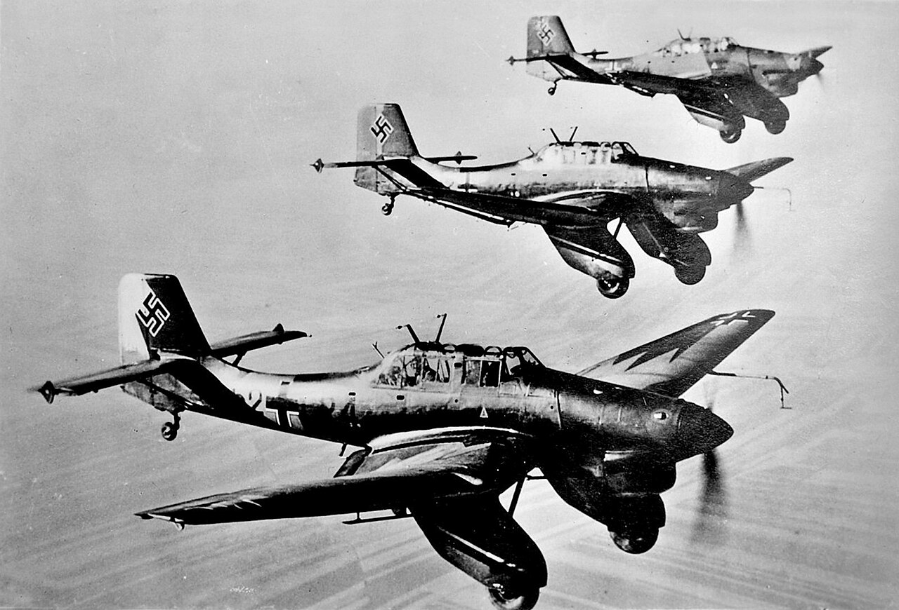
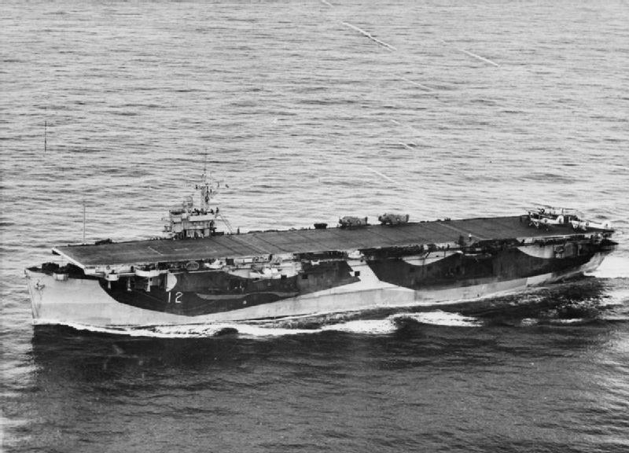
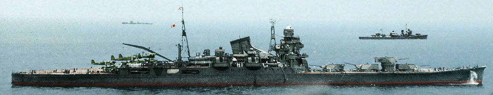
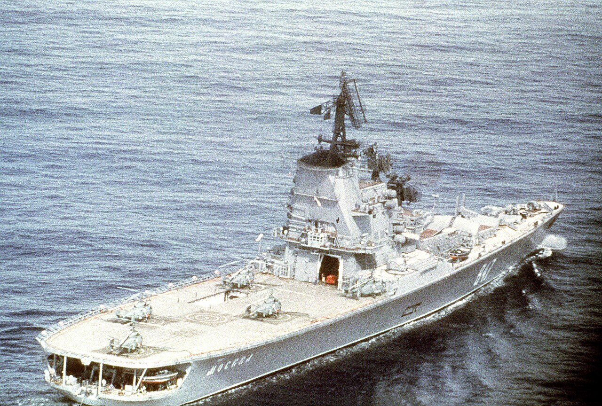
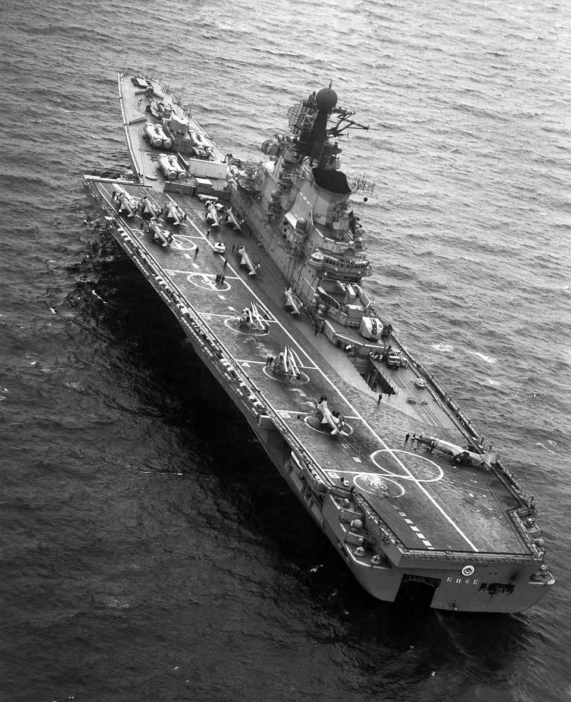
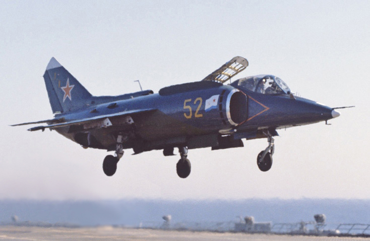
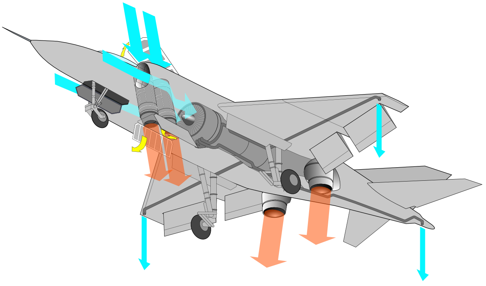
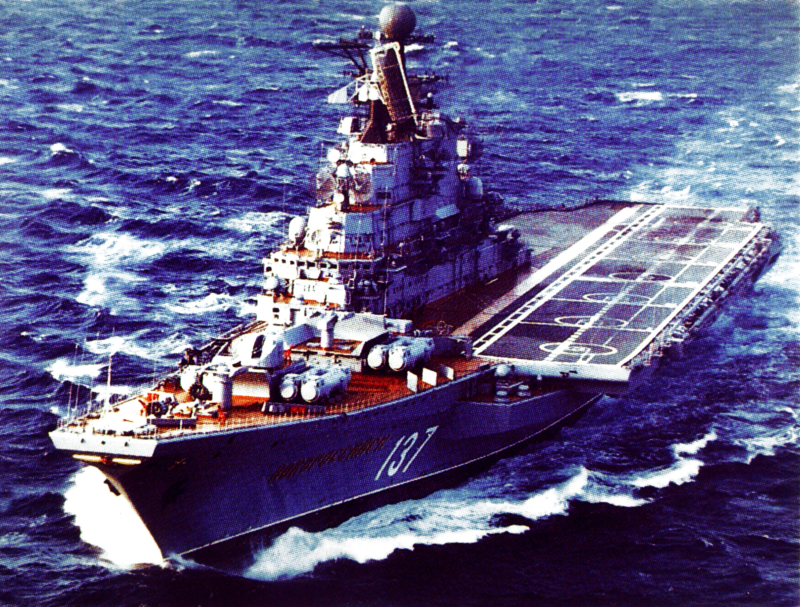

해협을 둘러싼 계산 (3) - 빨갱이들이 기어나온다!
게시: 2026-04-30T06:30:03+09:00
1936년 몽트뢰 협정이 맺어질 당시, 협정 당사국 중 항모를 가진 것은 영국 11척, 일본 6척, 프랑스 1척뿐. (미국은 당사국이 아니었음.) 그 사실을 생각하면 몽트뢰 협정에서 항공모함의 다다넬즈-보스포러스 해협 통과를 금지시킨 것은 당연히 소련과 튀르키예일 것이라고 생각들 하겠지만, 의외로 그걸 고집한 나라는 영국. 왜 영국은 스스로 항모의 흑해 진입을 막으려 했던 것일까? 여기엔 말 장난으로 슬쩍 우회로를 만들려던 각국의 속셈이 섞여 있음.

(1927년 호놀룰루에 기항한 HMS Hermes (표준 배수량 1만1천톤, 25노트). 당시 존재하던 항모들은 대부분 전함이나 순양전함을 개조하여 만든 것이었으나, 허미즈는 세계 최초로 설계때부터 항모로 설계된 항모의 시조새였음. 1942년 실론섬 해전에서 일본 해군 항공기들에게 격침됨.) 실은 몽트뢰 협정 본문에는 '항공모함'이라는 단어 자체가 빠져 있었음. 협정에 명시된 대형함(capital ship)의 정의는 배수량과 주포 구경이었으므로, 굳이 분류한다면 항모는 대형함으로 분류가 됨. 그런데 기억들 하시겠지만, 흑해 연안국은 홈그라운드의 특혜를 누려서 대형함의 해협 출입이 자유로왔음. 그러니까, 협정 본문이 그냥 그대로 확정된다면 나중에 소련이 항공모함을 건조하여 지중해로 몰고 나오는 것이 얼마든지 가능했음. 영국은 지브랄타도 있고 말타섬도 있으며 1936년 당시엔 이집트도 쥐고 있었으므로 지중해 전역에서 얼마든지 항공력을 투사할 수 있었음. 그러나 소련은 지중해 내에 가진 항공 기지가 아무 것도 없었음. 그런데 소련이 항공모함을 몰고 지중해로 나온다? 지중해 상공에서 붉은 별을 붙인 폭격기와 전투기들이 날아다니는 일은 지중해 제해권을 노리던 영국으로서는 절대 허용할 수 없었음. 그래서 본문에는 전혀 언급이 없던 항공모함이 몽트뢰 협정문 별첨 형태로 부랴부랴 등장한 것은 소련이 아니라 영국의 주장. 영국은 별첨을 통해 '항공모함은 대형함으로 분류하지 않는다, 그리고 항공모함은 흑해 연안국이든 비연안국이든 모두 해협 통과를 금한다'라고 명시하는데 성공. 그럼 여기서 추가적인 의문. 왜 소련은 그런 별첨 조항을 통해 자신의 잠재적 권리에 제한을 걸도록 허락했을까? 소련은 흑해 연안국으로서 얼마든지 권리를 주장할 수도 있었을 텐데? 이건 미래와 현실에 대한 타협. 소련은 당시 발트해에건 흑해에건 태평양에건 항모 건조 계획이 전혀 없었음. 계획조차 가지고 있지 않던 항모의 출입권을 지키려고 협상에 파토를 놓다가 까딱하면 흑해 연안국으로서 소련이 누리는 특혜 자체에 대한 합의가 무너질까 걱정이 되었던 것. 또 소련으로서도 항모를 콕 집어서 흑해 안으로 못 들어오게 하는 것이 1936년 당장의 안보 상황에 있어 그닥 나쁘지 않은 선택이었음. 항공모함이라는 함종은 무척 독특한 군함. 1936년만 하더라도 해전의 중심이 전함에서 항공모함으로 넘어갈 것이라는 생각을 하는 사람은 많지 않았으나, WW2 때 유명해진 Junkers Ju 87 폭격기의 첫 비행이 1935년인 것에 볼 수 있듯이, 당시 세계 각국은 항공력이 향후 전장에서 무척 중요하다는 것을 알고 있었음. 다만 적의 항공기지가 멀리 떨어져 있는 소련 우크라이나 지방이나 튀르키예의 수도 앙카라의 경우 적의 폭격을 받을 걱정을 할 필요는 없었음. 그런데 적의 항공모함이 흑해 안으로 들어온다? 언제든 돈바스나 앙카라에 폭탄이 떨어질 수 있다는 뜻.

(Ju-87 "Stuka" 폭격기. 나찌 독일은 1938년 항모 Graf Zeppelin을 진수시켰고, 거기 탑재할 함재 급강하 폭격기로 이 슈투카를 함재기용으로 개조하여 사용할 계획을 가지고 있었음.)
당시 영국이 가지고 있던 항모들은 모두 1만톤 기준을 넘기긴 했지만 HMS Hermes처럼 표준배수량 1만1천톤으로 아슬아슬하게 대형함으로 분류되는 것들도 있었음. 1만톤 이하의 항모도 얼마든지 건조가 가능했으므로, 별도의 조항을 두지 않으면 소형 항공모함이 1만톤도 넘지 않고 8인치 이상의 포도 갖추지 않은 경량 수상함으로 분류되어 얼마든지 흑해 안으로 들어와 폭격기를 날릴 수 있었음. 따라서 소련과 튀르키예는 항공모함을 콕 집어서 해협 통과 금지 함종으로 지정.

(Attacker급 호위항모인 HMS Striker (표준 배수량 9800톤, 18노트). 원래 미해군의 Prince William (CVE-19)이었으나 lend-lease 프로그램에 의해 영국해군으로 이양된 뒤 스트라이커로 함명을 바꿈. 표준 배수량이 9800톤인 것에 비해 만재 배수량은 거의 1.5배인 1만4천톤이 넘음. 호위항모는 특성상 자체 연료 및 항공유를 많이 싣기 때문.) 그런데 위에서도 이미 함재기 이야기를 했지만, 당시 전함들은 물론이고 순양함에도 정찰용 함재기 1~4대 정도를 탑재하는 것이 흔했음. 그런 것은 괜찮을까? 그런 것을 허용하다보면 항모도 은근슬쩍 통과하는 것 아닐까? 그래서 몽트뢰 조약에서는 아예 항공모함에 대해 아래와 같이 콕 집어서 정의. "항공모함이란 배수량이 얼마이든 간에, 해상에서 항공기를 탑재하고 운용할 '주된 목적'으로 설계되었거나 개조된 수상 전투함을 의미함. 어떤 전투함에 착함용 또는 이함용 갑판(landing-on or flying-off deck)을 설치했더라도, 해당 함선이 해상에서 항공기를 탑재하고 운용할 것을 주된 목적으로 설계하거나 개조한 것이 아니라면, 그러한 갑판이 설치되었다는 이유만으로 그 배를 항공모함 범주로 분류하지 않음." 이건 순양함이나 전함에 함재기가 실려 있다는 이유로 흑해 출입이 금지되는 일을 막기 위한 것이었으나, 나중에 소련측에게 유리하게 해석되는 여지를 줌.

(일본해군 중순양함 토네 (1만5천톤, 35노트). 토네는 워싱턴 해군 조약에서 탈퇴하면서 만들어진 중순양함으로서, 이 사진에서 보다시피 2연장 20cm 포탑 4개가 모두 함수 쪽에 몰려 있음. 마치 영국 해군의 HMS Nelson 같은 스타일. 토네가 이런 식으로 포탑을 모두 함수에 장착한 것은 넬슨처럼 집중 방호 구역(탄약고 등 주요 부분을 장갑으로 둘러싼 부분, 영어로 citadel)을 최소화하여 효율적인 설계를 한 것도 있지만 그렇게 절약된 함미 갑판에 최대 6기의 수상정을 싣기 위한 것. 물론 비행 갑판이 있었던 것은 아니었고, 수상정은 순양함 함미에 장착된 화약식 사출기 레일을 통해 이함한 뒤, 돌아올 때는 근처 해면에 착수한 뒤 기중기로 갑판까지 들어올렸음.) WW2가 미국과 소련의 승리로 완료되자마자 세계는 다시 자본주의와 공산주의로 갈려 냉전을 시작함. 미국은 해양국가답게 항공모함을 앞세운 강력한 해군력을 전세계에 투사하며 적어도 바다에서는 소련을 완벽하게 압도. 소련은 언제 쳐들어올지 모르는 미해군에 맞서 대양에서 항공모함을 공격할 장거리 폭격기와 잠수함 등의 방어용 비대칭 전력에 집중 투자. 그러다 소련이 1960년대에 비약적으로 해군력을 키우면서 슬슬 대양에서의 항공 전력 양성까지 시도하게 됨. 그 첫번째 시도가 1965년 진수된 헬리콥터 모함 모스크바(Moskva, 만재 1만5천톤, 31노트). 소련은 이 헬리콥터 모함을 ASW (anti-submarine warfare, 대잠전) 순양함으로 불렀고, 지금의 우크라이나 남해안의 니콜라예프(Nikolayev) 조선소에서 건조. 이 헬리콥터 모함은 소위 말하는 through-deck, 즉 이물부터 고물까지 탁 트인 비행갑판으로 설계된 것이 아니라서 고정익 항공기 운용이 불가능했으므로, 소련이 이 군함에 대해 '순양함이니까 통과할 권리가 있다'면서 보스포러스 해협을 통과할 때 튀르키예는 물론 NATO도 딱히 딴지를 걸지는 않았음.

(소련의 헬리콥터 모함 Moskva. 누가 봐도 항모라고 부를 수는 없음. 무장도 대공 미쓸과 대잠 미쓸, 어뢰 발사관 등 대잠용 순양함이 분명.) 그러나 여기서 만족할 빨갱이들이 아니었음. 이런 모스크바급 헬기 모함들을 몇 척 만들더니, 소련은 경사 비행갑판을 갖추어 헬리콥터 뿐만 아니라 VTOL(vertical take-off & landing) 고정익 항공기까지 운용할 수 있는 키예프(Kiev, 4만1천톤, 32노트)를 1972년 흑해의 니콜라예프 조선소에서 건조하여 진수시킴. 비록 키예프급 항모는 through-deck을 갖추지는 않았으나, 이건 누가 봐도 항모에 가까운 군함이었음. 그런데도 소련은 이걸 또 항공순양함이라는 듣도 보도 못한 함종으로 부르면서 뻔뻔스럽게도 보스포러스 해협 통과를 요구. 그런데 튀르키예는 키예프가 강력한 함대함 미쓸 P-500 Bazalt을 주무장으로 가지고 있는데다 through-deck을 갖추지 않았으므로 몽트뢰 협정의 애매모호한 항공모함의 정의, 즉 '해상에서 항공기를 탑재하고 운용할 것을 주된 목적으로 설계된 군함'에 해당하지 않는다고 해석하면서 통과를 허용. 그렇게 해협을 통과하는 키예프의 갑판에는 수직이착륙 전투기인 Yak-38이 떡 하니 놓여 있어서 이를 보던 NATO 관계자들의 복장을 터뜨림.

(항공 순양함 Kiev. 비행갑판이 비스듬하게 붙어 있기는 하지만 특히 앞갑판에는 항공기가 아니라 대함 미쓸 발사관이 잔뜩 붙어 있으니, 사실 저걸 항모라고 부르기엔 애매한 것이 사실.)

(소련의 수직이착륙기 Yak-38. 기술적 혁신은 대단했으나 완성도는 그다지 높지 못해서 함대 방공용 전투기로서는 쓸모가 없었다고.)

(수직이착륙을 위한 저 독특한 lift fan 구조는 미해병대의 F-35B의 것과 매우 흡사하여, F-35B는 저 기술을 라이선스 받아서 만든 것이라는 이야기까지 있었으나 근거 없는 소문이라고 함.)

(키예프급 항모... 아니 항공순양함 노보로시스크(Novorossiysk). 역시나 또 흑해의 니콜라예프 조선소에서 진수되어 보스포러스 해협을 거쳐 나온 뒤, 블라디보스톡의 태평양 함대에서 활동. 특히 1985년에는 일본 동쪽 해상에서 대규모 해상 훈련을 벌였는데, 그 내용은 가상 미해군 항모 전단 역할을 하는 노보로시스크가 공격을 해올 때, 그걸 격침하기 위해 Tu-95 및 Tu-22 폭격기 및 잠수함들을 동원하여 그걸 막아내는 것. 노보로시스크는 우리나라 동해에서도 자주 활동했는데, 결국 최후는 우리나라 포항에서 맞이함. 소련이 해체되면서 노보로시스크는 취역한지 11년만인 1993년 퇴역했는데, 1997년 고철로 팔려 포항에서 해체된 것. 그러니까 90년대 후반, 우리나라 IMF 당시 만들어진 현대 자동차나 현대중공업의 선박 등에는 노보로시스크를 녹인 강철도 일부 섞여 있었을 듯.) 당시 튀르키예는 소련을 지나치게 거슬렀다가 몽트뢰 협정이 무너질까 두려워했고, 다른 NATO 국가들은 튀르키예를 너무 압박하다가 까딱하면 튀르키예가 소련쪽에 붙을까봐 걱정했기 때문에 이런 일이 벌어진 것. 결국 국제 관계는 조약과 의리가 아니라 오직 힘과 이익에 따라 움직이는 것. 그런데 이렇게 키예프급 항공 '순양함'을 총 4척이나 건조하여 나름 원양 해군을 편성한 소련은 자신감이 붙었는지 또 사고를 침. 이번에는 NATO 국가들이 더 못 참겠다고 벌떼처럼 들고 일어날 채비를 할 정도의 일이었음. 그 이야기는 분량 조절 실패로 또 다음 주로...